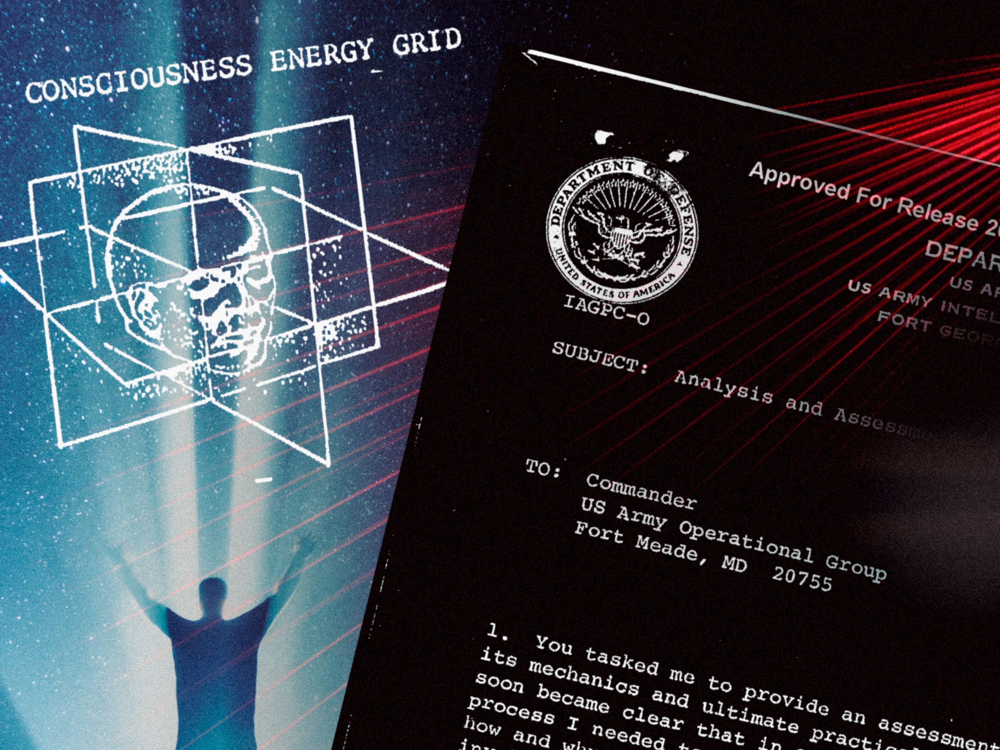
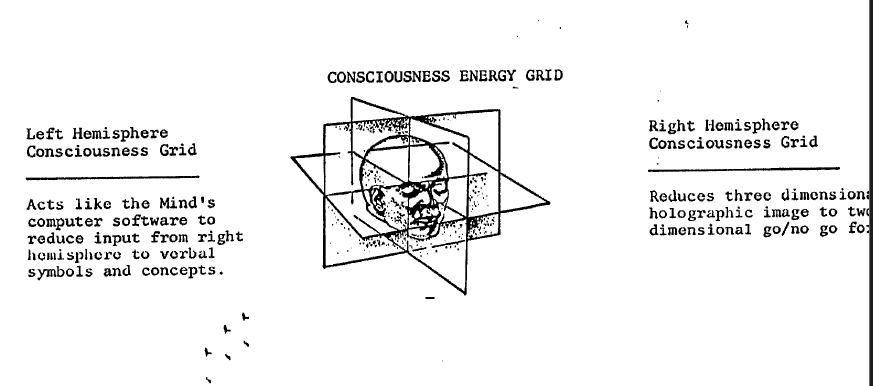
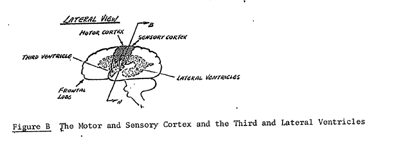
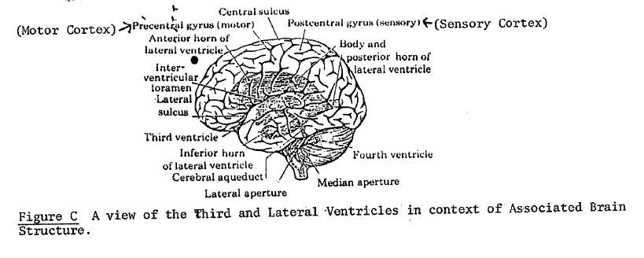

O que foi o Projeto Gateway?
O Projeto Gateway, também conhecido como "Stargate Project", foi um programa de pesquisa e investigação conduzido pelo governo dos Estados Unidos e pela CIA nas décadas de 1970, 1980 e início dos anos 1990. Esse projeto tinha o objetivo de explorar a aplicação de habilidades psíquicas e paranormais em operações de inteligência e espionagem.

As atividades do Projeto Gateway eram centradas na chamada "visão remota", que é a alegada capacidade de um indivíduo perceber informações sobre um local, pessoa ou evento distante no tempo e no espaço através da projeção astral. O programa também abordava outras habilidades, como telepatia e precognição.
O Projeto Gateway teve várias fases e evoluiu ao longo do tempo. Foi inicialmente financiado e executado pelo Exército dos EUA, mas depois passou a ser administrado pela Agência de Inteligência de Defesa (DIA) e outras agências de inteligência. Notáveis figuras do mundo da parapsicologia e da pesquisa psíquica, como Ingo Swann e Russell Targ, estiveram envolvidas no programa.
Fase Hemi-Sync
A fase Hemi-Sync do Projeto Gateway foi uma parte importante da pesquisa conduzida pelo governo dos Estados Unidos no âmbito do programa de visão remota conhecido como Projeto Gateway ou Stargate Project. Hemi-Sync é uma abreviação de "Hemispheric Synchronization" ou (Sincronização Hemisférica) e se refere a uma tecnologia desenvolvida pelo Instituto Monroe, fundado por Robert Monroe.

Robert Monroe fundador do Instituto Monroe
A tecnologia Hemi-Sync envolve o uso de estímulos sonoros, como batidas binaurais, para criar um estado de sincronização entre os hemisférios cerebrais do cérebro humano. A ideia por trás disso é que, ao sincronizar as ondas cerebrais dos hemisférios direito e esquerdo, as pessoas podem alcançar estados alterados de consciência, facilitando experiências como viagens fora do corpo (projeção astral) e, potencialmente, visão remota.
Uma das imagens liberadas pela CIA que mostra a suposta
"Rede Energética da Consciência"
No contexto do Projeto Gateway, a tecnologia Hemi-Sync foi usada como uma ferramenta para ajudar os participantes a atingir estados de consciência expandida. Os participantes eram submetidos a sessões de áudio Hemi-Sync enquanto participavam de exercícios de visão remota e outras atividades relacionadas à pesquisa psíquica. A ideia era que a sincronização hemisférica induzida pela tecnologia Hemi-Sync poderia potencialmente aumentar a eficácia das habilidades psíquicas dos participantes, incluindo a capacidade de realizar visão remota.
Fotos desclassificadas pela CIA
Figura B - "O córtex motor e sensorial e os terceiros e laterais ventrículos."

Figura C - "Uma vista do terceiro e lateral ventrículo no contexto das estruturas cerebrais associadas."

Embora a tecnologia Hemi-Sync tenha gerado interesse e tenha sido usada no contexto do Projeto Gateway, é importante observar que a eficácia desses métodos é altamente debatida e não está completamente comprovada cientificamente. O Projeto Gateway, como um todo, foi desclassificado em 1995, e muitos de seus resultados e métodos permanecem objeto de controvérsia e ceticismo. Independentemente disso, a fase Hemi-Sync do Projeto Gateway continua a ser um ponto de interesse para aqueles que estudam fenômenos psíquicos e estados alterados de consciência.
Fim do Projeto Gateway
Em 1995, o programa foi oficialmente desclassificado e "encerrado", e os documentos relacionados ao Projeto Gateway foram arquivados. Em 2003, muitos desses documentos foram disponibilizados ao público em geral graças aos esforços de desclassificação e pesquisa de indivíduos como John Greenewald Jr., que administra o site The Black Vault, um repositório online de documentos desclassificados e informações relacionadas à Lei de Liberdade de Informação (FOIA). Esses documentos revelaram detalhes sobre as atividades e resultados do Projeto Gateway, bem como os métodos usados para investigar habilidades psíquicas. O Projeto Gateway continua sendo um tópico de interesse para estudiosos e entusiastas de fenômenos paranormais e de pesquisa psíquica.
É importante ressaltar que o Projeto Gateway foi objeto de considerável debate e controvérsia ao longo dos anos, com algumas pessoas alegando que ele era mais bem-sucedido do que o governo reconheceu publicamente, e há vários indícios de que o interesse dos EUA em projetos desse mesmo tipo perdurem até os dias de hoje, uma vez que grandes nomes ao redor do mundo relacionados e especializados nos estudos da consciência e habilidades psíquicas (projeção astral, telepatia, visão remota), relataram terem sido contatados em algum momento de suas vidas por instituições dos EUA para viajarem até lá com o objetivo de estudar tais fenômenos em laboratórios, alguns dos Brasileiros que relataram terem sido contatados são Saulo Calderon, Waldo Vieira, Laércio Fonseca.